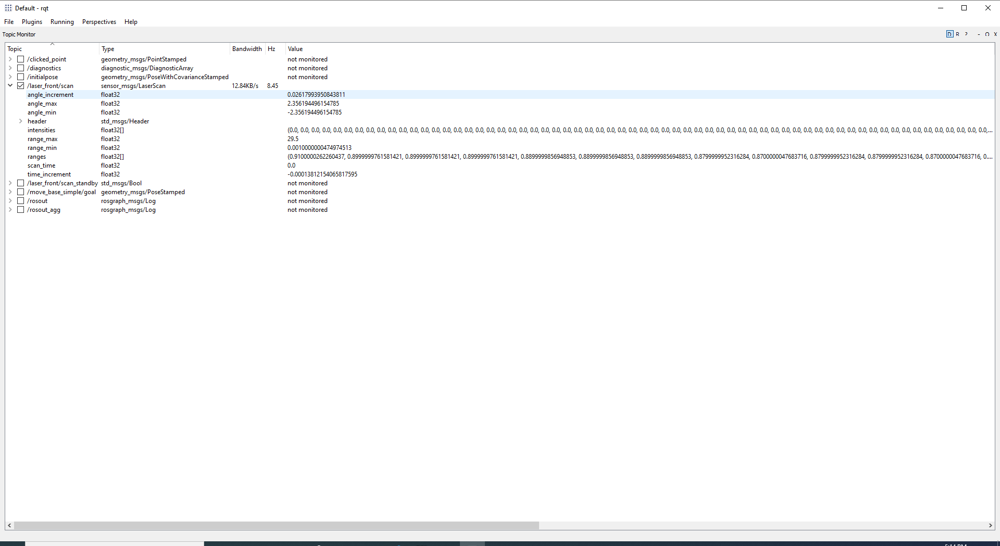

SICK S300 Safety Laser Scanner
In this post, I will show you how to get started with SICK S300 Safety Laser Scanner in a ROS workspace. I will begin with an empty workspace, add required ROS packages, define and run an exmaple ROS application, and check laser scan in the ROS visualization tools.
In this tutorial, I will be using cob_sick_s300, a community ROS package, to drive SICK S300 to get the laser scan messages into ROS topics.
For more information, see http://wiki.ros.org/cob_sick_s300.
Prerequisite
- You have a machine with
Windows 10installed. - You have
ROS Melodic Desktop Fullinstalled. - You have a SICK S300 Safety Laser Scanner commissioned to operate and connected to your host machine over a serial port.
- This tutorial applies to:
Step 1: Clone the Driver Package
Firstly, you will need a catkin workspace to contain the driver package.
Let's assume you are working on a empty workspace under c:\s300_ws and now you need to clone the driver package and its dependencies into the source folder:
:: change the directory to the source subfolder.
c:\s300_ws> cd src
:: checkout the driver package code.
c:\s300_ws\src> git clone https://github.com/ms-iot/cob_sick_s300
c:\s300_ws\src> git clone https://github.com/wjwwood/serial
Step 2: Create your owned Package
Now you have the required packages in your workspace. By ROS convention, it is common to manage the peripheral nodes in ROS launch files. However, since we begin this tutorial with an empty workspace, let's create a new package so we can add the ROS launch files later.
:: change the directory to the source subfolder.
c:\s300_ws> cd src
:: create your owned package
c:\s300_ws\src> catkin_create_pkg my_pkg
Step 3: Build the Workspace
Let's build the workspace to produce the executables and binaries.
And remember to run setup.bat to add the development space into the current environment.
:: Build the workspace
c:\s300_ws> catkin_make
:: Add the development space into the current environment.
c:\s300_ws> devel\setup.bat
Step 4: Write a ROS Launch file running Laser Scanner node
At this moment, you are ready to add new ROS launch file for the new package.
Let's add a new one called my_pkg.launch:
:: Change the directory to new package
c:\s300_ws> roscd my_pkg
:: Create the ROS launch file
C:\workspace\s300_ws\src\my_pkg> mkdir launch && notepad launch\my_pkg.launch
Once the notepad gets launched, copy and paste the following text into the new file, save it, and close the notepad:
<?xml version="1.0"?>
<launch>
<!-- start laser driver -->
<node name="laser_front" pkg="cob_sick_s300" type="cob_sick_s300" respawn="false" output="screen">
<rosparam subst_value="true">
port: COM1
baud: 115200
scan_duration: 0.025 #no info about that in SICK-docu, but 0.025 is believable and looks good in rviz
scan_cycle_time: 0.040 #SICK-docu says S300 scans every 40ms
inverted: true
scan_id: 7
frame_id: /base_laser_link
scan_intervals: [[-1.3526, 1.361357]] #[rad] these intervals are included to the scan
</rosparam>
</node>
<!-- start ROS visualization tools -->
<node name="rqt_gui" pkg="rqt_gui" type="rqt_gui"/>
<node name="rviz" pkg="rviz" type="rviz"/>
</launch>
Before we move forward, let's take a look some important parameters to accommodate your environment:
portshould be pointed to where theSICK S300connnected to your host machine.baudshould be the baudrate configured by theSICK S300.
Step 5: Start to Run ROS application
After everything is correctly configured, you are ready to run it.
:: Run the ROS launch file
c:\s300_ws> roslaunch my_pkg my_pkg.launch
A few moments later, you will see rqt and rviz tools running.
On the rqt, you can turn on the real-time monitoring on the topic /laser_front/scan.

And on the rviz, you can add built-in LaserScan display by topic and visualize /laser_front/scan in the 3D view port.

Summary
Now you have an initial bring-up for SICK S300 Safety Laser Scanner. You may need to tweak other parameters to reflect the settings of your laser scanner. For more information, visit http://wiki.ros.org/cob_sick_s300 for the complete guidance.